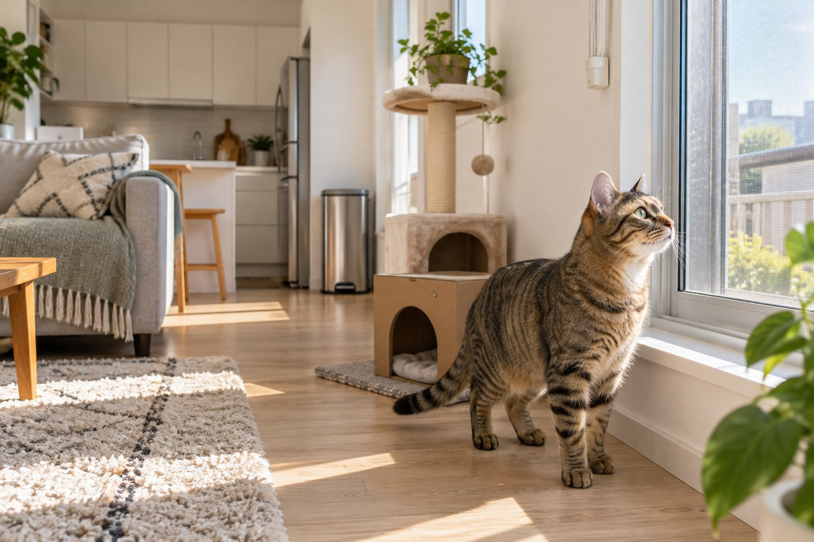

How to Cat-Proof an Apartment, Room by Room

Cat-proofing is not about turning your apartment into a padded box. It is about removing the few hazards that can cause serious trouble, then adding the things a cat is supposed to climb, scratch, hide in and investigate. This room-by-room sweep takes about an hour for a small apartment — and the laundry area is the room people most often forget.
Researched by the CanMyPet Editorial Team · Published October 8, 2026 · Checked against the primary sources listed below.
- Close every exterior door, window and balcony access point.
- Pick up string, ribbon, thread, hair ties and other swallowable objects.
- Move medicines, cleaners and pest-control products behind a secure door.
- Unplug, cover or route loose electrical cords.
- Check every plant against an authoritative cat-safety source before leaving it accessible.
- Choose one quiet room as the cat's home base while you finish the rest.
Before you start: see the apartment at cat height
Walk each room twice: once standing up, then again from a crouch. The second pass reveals gaps behind appliances, loose cords under furniture and tiny objects that disappear from human view. Gently test anything a cat could jump onto. If a shelf wobbles under your hand, it needs anchoring or a different location.
For a new cat, prepare one calm “home base” with water, food, a litter box, a scratcher, a hiding place and a comfortable resting spot. The ASPCA recommends introducing a new home gradually rather than opening every room at once. This also gives you time to learn whether your cat is a climber, chewer, drawer-opener or tiny-gap enthusiast.
1. Entryway and front door
The front door is a moving hazard: groceries, visitors and deliveries create moments when nobody is watching the threshold.
- Create a “pause point” a few feet from the door with a small table, gate or closed interior door so you can set down bags before entering fully.
- Keep the cat carrier assembled and easy to reach — not buried at the back of a closet.
- Store shoes, reusable bags and dangling straps in a closed cabinet or bin.
- Ask visitors to wait until you confirm the cat is secure before they prop the door open.
- Make sure identification and microchip contact details are current; apartment moves are a good time to check.
2. Windows, blinds and balconies
A view is wonderful enrichment, but an open window is not a cat perch until it has a secure barrier. The ASPCA advises checking that all windows have secure screens. Inspect the frame, mesh and latches, and press around every edge. A loose insect screen may pop out when pushed.
- Repair torn mesh and loose frames before allowing window access.
- Use a properly fitted, cat-resistant screen or approved window guard where needed; confirm the installation with your landlord.
- Choose cordless blinds when replacing window coverings. Otherwise, make cords inaccessible and anchor continuous loops correctly.
- Move climbable furniture away from any window that is not fully secured.
- Keep balconies closed until professionally secured for the individual space. Netting, screens and fixings must tolerate weather and cannot leave escape gaps.
3. Living room
This is where “safe” and “interesting” should meet. The Feline Veterinary Medical Association and International Cat Care describe a healthy feline environment around five needs: a safe place; separated key resources; opportunities for play and predatory behavior; predictable positive interaction; and respect for a cat's sense of smell and other senses.
- Route charging cables and lamp cords through cord covers or behind furniture; replace damaged cords.
- Check recliners, sofa beds and rocking chairs before operating them.
- Anchor tall or unstable furniture according to its instructions.
- Store candles, matches and breakable décor rather than relying on a high shelf.
- Block narrow gaps where a cat could become trapped, while preserving safe hiding places.
- Provide a stable scratcher and a sturdy elevated perch. Put the “yes” options near the furniture or window the cat already finds interesting.
- Rotate a few toys instead of leaving every toy out. Put wand toys and anything with string away after supervised play.
4. Kitchen and dining area
Kitchens combine heat, sharp tools, food, packaging and fascinating smells. The simplest system is to make counters boring and storage difficult to open.
- Use a lidded trash can that cannot tip or pop open.
- Store food, knives, skewers, foil, plastic wrap and small packaging behind closed doors.
- Turn pan handles inward and keep the cat out of the kitchen while a hot stovetop or oven is in use.
- Consider stove-knob covers if the controls can be bumped or turned by paws.
- Run the dishwasher only after checking inside, and close it when loading pauses.
- Rinse food residue from cans and containers before placing them in secured recycling.
- Do not leave grocery bags, handles or packing straps on the floor.
Food safety varies by ingredient and amount, so this checklist does not make toxicity calls. Use our food checker for general reference, and ask a veterinarian or poison-control service about any suspected exposure.
5. Bathroom
The bathroom is small enough to feel controlled, which is exactly why nightstand medicines, dental floss and cleaning products get overlooked.
- Keep medicines, supplements, cosmetics and cleaners inside a secure cabinet — not on an open shelf or counter.
- Put floss, cotton swabs, hair ties and razor covers in a closed bin.
- Close the toilet lid and empty the bathtub or sink after use.
- Store plug-in appliances after they cool; do not leave cords hanging.
- Keep the bathroom door closed while strong cleaning products are in use, follow every label direction and ventilate as directed.
6. Laundry and utility area — the room people forget
Warm, dark appliances look like excellent hiding places. Build one rule into the household routine: look, feel and count before you close or start.
- Look inside the washer and dryer before loading, closing and starting them.
- Keep appliance doors closed when not in use.
- Store detergent, cleaning products and dryer sheets behind a secure door.
- Remove lint, string, fasteners and small clothing accessories from the floor.
- Block access behind appliances if the gap leads to wires, hoses or an area you cannot reach safely.
- Check baskets before carrying or tipping them.
7. Bedroom and home office
A bedroom often contains the smallest hazards in the home: jewelry, earplugs, sewing supplies, medication and charging cables. An office adds paper clips, rubber bands and moving equipment.
- Clear nightstands and close drawers completely.
- Store thread, yarn, needles, pins, hair ties and jewelry in latched containers.
- Use cable sleeves and unplug equipment that attracts chewing.
- Keep paper shredders switched off and unplugged when not in use.
- Check closets before closing doors, especially if the cat likes to nap on shelves.
- Keep adjustable desks, folding furniture and office chairs still until you know the cat's location.
8. Plants, flowers and pest control
Plant names are unreliable, and a “high shelf” is still part of a cat's territory. Identify every plant by its exact species and verify it using the ASPCA's searchable Toxic and Non-Toxic Plants List. If the identification is uncertain, remove the plant from the apartment or place it in a genuinely inaccessible closed room while you verify it.
- Include cut flowers, bouquets, fallen leaves, pollen and vase water in the plant sweep.
- Do not depend on deterrent sprays to make an unsafe plant safe.
- Check previous pest-control placements in a new apartment.
- Keep baits, insecticides and rodent-control products completely inaccessible, and follow the product label.
This article intentionally does not provide a list of toxic plants or treatment instructions. If you suspect exposure, contact your veterinarian or an animal poison-control service promptly.
Make the apartment satisfying, not just safe
A home with every hazard removed can still be frustrating if there is nowhere appropriate to climb, scratch, hide or play. The feline environmental-needs guidelines recommend giving cats choices and separating important resources. In a small apartment, use height and placement rather than buying a mountain of products.
| Need | Small-space solution | Placement tip |
|---|---|---|
| Safe retreat | Covered bed, open carrier or cardboard hide | Quiet corner with more than one way out when possible |
| Vertical space | Stable cat tree, window perch or secured shelf route | Near family activity but away from unsafe windows |
| Scratching | One sturdy vertical and one horizontal surface | Near sleep spots and household traffic routes |
| Play | Short interactive sessions plus safe solo toys | Store stringed toys after use |
| Resources | Separate food, water, litter and resting areas | Avoid forcing everything into one busy corner |
Renter-friendly fixes that do not damage walls
- Split-loom tubing or cord covers: organize charging and lamp cables without permanent construction.
- Freestanding storage with doors: turns exposed bathroom or kitchen supplies into closed storage.
- Removable cabinet latches: useful for cats that learn to pull doors open; test adhesion and replace when loose.
- Heavy, stable scratchers and cat trees: choose a wide base and follow assembly instructions.
- Lidded bins: contain craft supplies, hair accessories, cords and recycling.
Removable does not mean automatically safe. Follow product instructions, keep adhesive pieces out of reach and ask the landlord before changing windows, balcony barriers, doors or any building fixture.
The final “cat-eye” inspection
Release your cat into one completed room and supervise quietly. Watch where they look, squeeze, jump and paw. That behavior is a better inspection tool than guessing. Recheck the apartment after deliveries, repairs, guests, moving furniture and bringing home any new plant or appliance.
Frequently asked questions
Is a window screen enough to keep a cat safe?
Only if it is securely fitted, undamaged and strong enough for your cat. Check frames, latches and mesh regularly. Do not assume a loose insect screen will hold a cat that pushes or climbs.
Can I cat-proof an apartment without drilling holes?
Many improvements are renter-friendly, including cord covers, lidded bins, cabinet latches, storage boxes and freestanding cat furniture. Safety-critical window or balcony work should be approved by the landlord and professionally installed when needed.
What room do people most often forget to cat-proof?
Laundry and utility areas are easy to overlook. Always check washers and dryers before closing or starting them, store cleaners behind a secure door and remove strings, dryer sheets and small objects from the floor.
How often should I repeat the checklist?
Do a quick sweep weekly and a full room-by-room check after moving, repairs, guests, deliveries, new furniture, new plants or any change in your cat's habits.
Sources
- Feline Veterinary Medical Association — AAFP/ISFM Environmental Needs Guidelines (guideline and 2026 caregiver brochure)
- ASPCA — Moving With Your Pet (pet-proofing and gradual introduction)
- ASPCA Animal Poison Control Center — Dangers Lurking in Every Room of Your Home
- U.S. Consumer Product Safety Commission — Window Blind Cords
For general information only. This checklist does not assess exposures or replace advice from your veterinarian, animal poison control, landlord or a qualified installer.